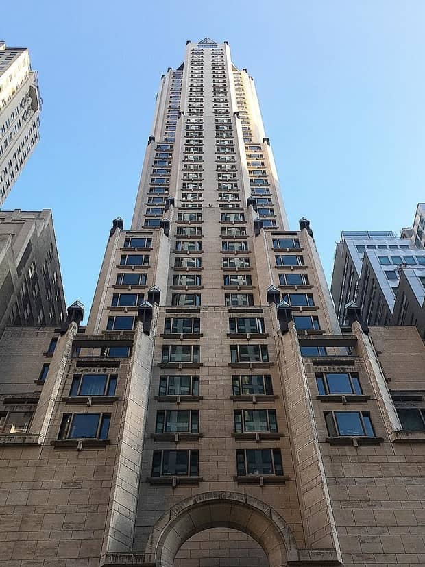
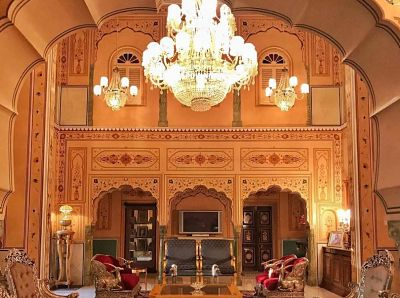
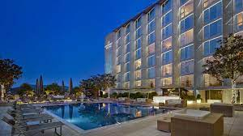

FOUR SEASONS

Está ubicado en la zona más exclusiva de Nueva York conocida como Midtown, muy cerca de la icónica joyería Tiffany’s inmortalizada en la película Desayuno con diamantes.
La Ty Warner Penthouse Suite y la Royal Suite están preparadas para satisfacer las altas exigencias de sus huéspedes, que tendrán a su disposición una vista panorámica de 360º de la ciudad.
RAJAPALACE

Ubicado en la ciudad de Jaipur, capital de la provincia de Rajasthan (unos 300km al sur oeste de Delhi). La suite Maharaja’s Pavillion es la más exclusiva: tiene cuatro plantas que ocupan un total de 1.500 metros cuadrados con jacuzzi privado, paredes llenas de espejos y adornado de muebles bañados en oro.
Los World Travel Awards 2007 lo galardonaron como ‘Mejor hotel patrimonio mundial’. Está enclavado en el epicentro histórico de la región, rodeado por edificios históricos, fortalezas, palacios y castillos.
PRESIDENT

Este hotel de lujo, punto de reunión de los más adinerados en Suiza, tiene en Bill Gates a uno de sus habituales huéspedes. Se alza junto al lago Ginebra, cuenta con 12 dormitorios de lujo y 12 piscinas de mármol en cada uno de ellos con vistas al lago y las montañas que lo rodean.
Los cristales de la planta superior son antibalas y en este piso se encuentra el “grand piano”. También dispone de mesa de billar y gimnasio privado.